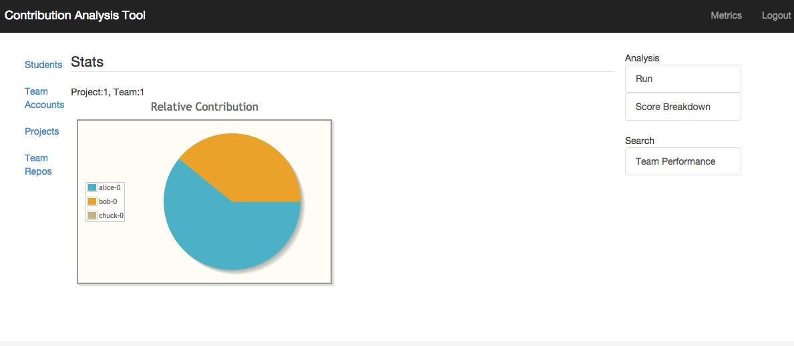
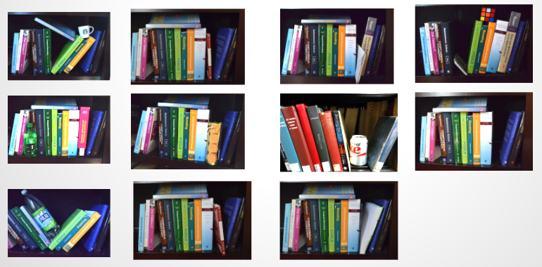

Software Contribution Analysis Tool
The project was concerned with objectively analyzing a student’s quantifiable contributions to team projects. The contention motivating the project was that accurately evaluating student contributions is an important pedagogical task that an instructor must not leave to guesswork.
The tool uses software quality metrics and other VCS-related activity to measure the quality and quantity of student contributions. The project report covers some details of how the tool makes this happen.
Some of the pertinent features of the application are: (a) integration with external build systems; (b) authentication and authorization; (c) visual comparison of student performances; (d) bulk data import; and (e) data export.
On an architectural level, the application was implemented as a modular application, thereby making it possible to allow relevant analysis plugins to be customized, added and removed. The project also relied on open source libraries and software such as PrimeFaces (JSF library), JSF (MVC), Apache Maven (Java build tool), Apache Tomcat (servlet container), Apache Derby (embedded relational database), JUnit (unit testing framework), and Jenkins.
The tool does not download and run the builds itself, but relays this task to Jenkins, a popular open-source continuous-integration (CI) server. As a student makes commits to a project, Jenkins runs various plugins as part of the build process and provides relevant statistics via a RESTful API. The web application leverages these APIs to analyze and summarize student activity.
As the report suggests, automating contribution analysis has several benefits:
- Gathering insights into student behavior by looking at how effective participation relates to final grades.
- Identifying "troubled" relationships by getting alerts for teams that exhibit an imbalance in their participation score.
- Grading teams uniformly.
- Allowing a student to more easily report any ``free-riders" in a project.
Robot Localization using Particle and Kalman Filters
Using Kalman filters, extended Kalman filter (EKF), k-Nearest Neighbors, and particle filters, I worked with other team members on tackling a motion prediction problem of a "micro robot", and I implemented several approaches such as EKF. HEXBUG Nano is a "micro robotic creature" that propels forward and explores its environment by using the physics of its vibration. The goal was to predict its motion given a history of its trajectories. The best results were achieved with particle filters and a simple motion model.
I wrote and organized most of the project report; from a pool of 50+ team submissions, the report was selected as one of the best reports (4 in all).
Optimal Course Scheduler
Created a Java based course scheduler system using integer programming with the Gurobi optimization library. The program uses different criteria (number of students, available instructors, etc.) to try to come up with an optimal scheduling solution (assigning students to classes based on instructor and TA availability, etc).
The application was implemented as a 3-tier web application. The functionality was separated into different modules to avoid a monolithic application. Like some academic IT applications written in Java (e.g., Sakai), the architecture/design was loosely based on Java EE. JavaServer Faces (JSF) framework was used to realize the MVC front-end layer. Hibernate, as a Java Persistence API (JPA) implementation, was chosen as the ORM framework.
Choosing a n(3)-tier architecture and a Java EE based stack proved to be a "good enough" choice (sufficient for an A and an offer of TAship for the course). The architecture indirectly allows horizontal scaling (with a data grid cluster, for instance). For large-scale production-use optimization problems, however, a truly distributed component architecture would have been a better choice. This possibility was not explored due to time constraints, but I hope to create a different implementation in future (using Scala and Akka perhaps).
Userspace Threading Library
As part of a systems course, I created a C-based userspace thread and mutex library (as an alternative to NPTL). The preemptive round robin scheduler works on a queue of threads to be scheduled. Needless to say, this was a challenging and rewarding project.
The thread and mutex API looks like the following:
void thread_init(long period);
int thread_create(thread_t *thread;
void *(*start_routine)(void *),void *arg);
int thread_join(thread_t thread, void **status);
void thread_exit(void *retval);
int thread_yield(void);
int thread_equal(thread_t t1, thread_t t2);
int thread_cancel(thread_t thread);
thread_t thread_self(void);
thread_mutex_init(thread_mutex_t *mutex);
int thread_mutex_lock(thread_mutex_t *mutex);
int thread_mutex_unlock(thread_mutex_t *mutex);
Visual Bag of Words Application
The project’s goal was to build an object classification system by utilizing SIFT for feature detection and a Visual Bag of Words model. The work combined computational photography (specifically, feature detection) with machine learning (classification and clustering).
A use case is an application which detects unwanted or dangerous objects, such as liquid containers on shelves, in images captured by a robot. A robot could capture photos of each shelf in a facility and then periodically compare the images to the original (or recent) images. The robot might even be a small drone (ideally with autonomous flying capability) or a rover with navigation capabilities.
There can different types of unwanted objects and shelving errors, so it is desirable to not "hardcode" which objects are deemed "dangerous." Hence, machine learning.
A BoW model represents an object (e.g., image of a human face) as a histogram over its regions or features (e.g., eyes, nose, ears, etc). Csurka et al. (in their 2004 paper) demonstrated a BoW model to distinguish between examples of photos of books, cars, trees people, etc.
The tool detects suspicious items such as those shown below. Note that there were around 20% false positives (which really is the state of the art with simple Visual BoW approaches).
Back to the home page.